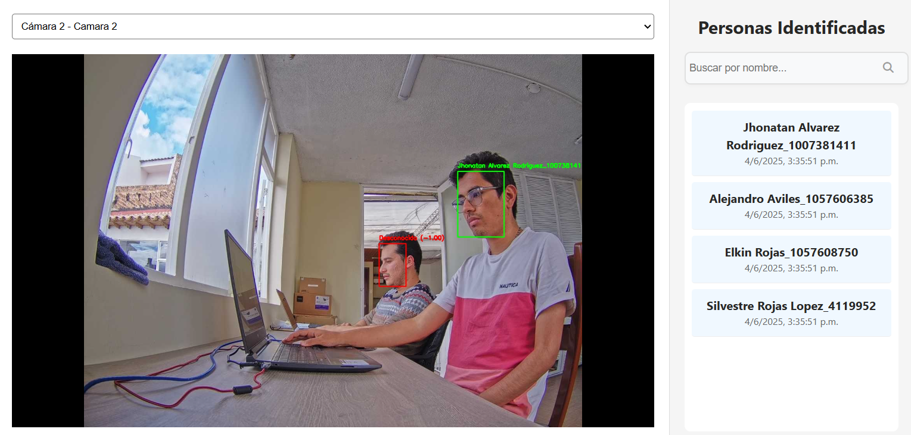

Sistema de Reconocimiento Facial
Registro de Usuario
Registro Móvil Web
Cámara Mobile
Registro Web
Cámara Web
Captura de Rostro
Verificación de Identidad
No Documento de identidad
API de Verificación CINTEL
Verifica si el Documento esta registrado
Verificación Exitosa
Verificación Fallida
Almacenamiento en la Base de datos
Datos personales y Embeddings
Servidor Backend
Procesa los datos para su almacenamiento
Base de datos
Base de datos NoSQL en la nube para almacenamiento seguro
Almacenamiento de Embeddings
Procesamiento en Tiempo Real


Interfaz de Monitoreo
Sistema de Monitoreo
Control de Entrada
Sistema de Control de Entrada

Descripción Técnica
El proceso comienza con el registro de usuario, donde se capturan datos personales y biométricos faciales a través de dispositivos móviles o computadoras. Estos datos son la base para el reconocimiento posterior.